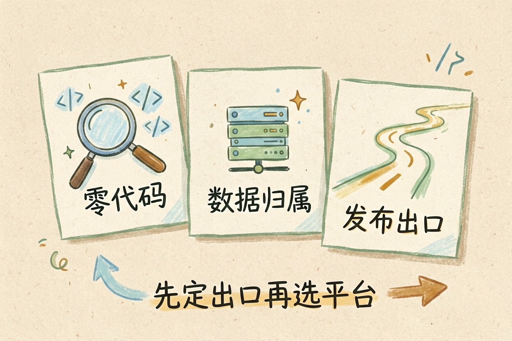
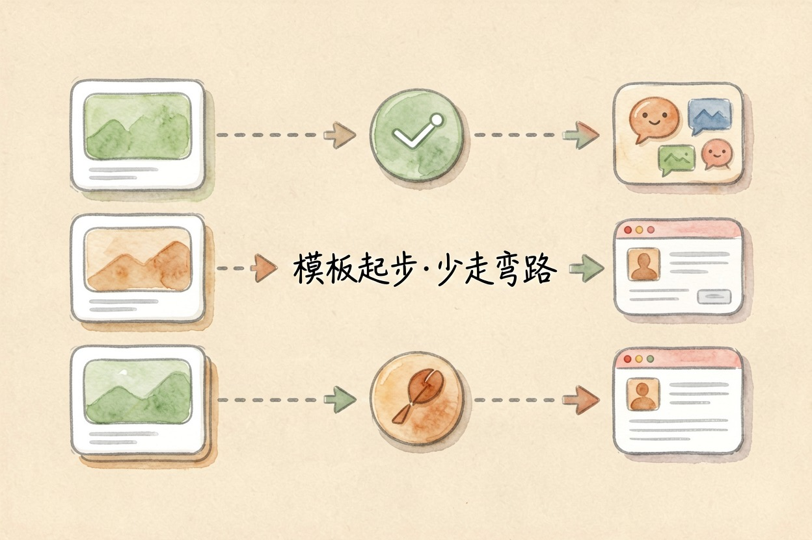
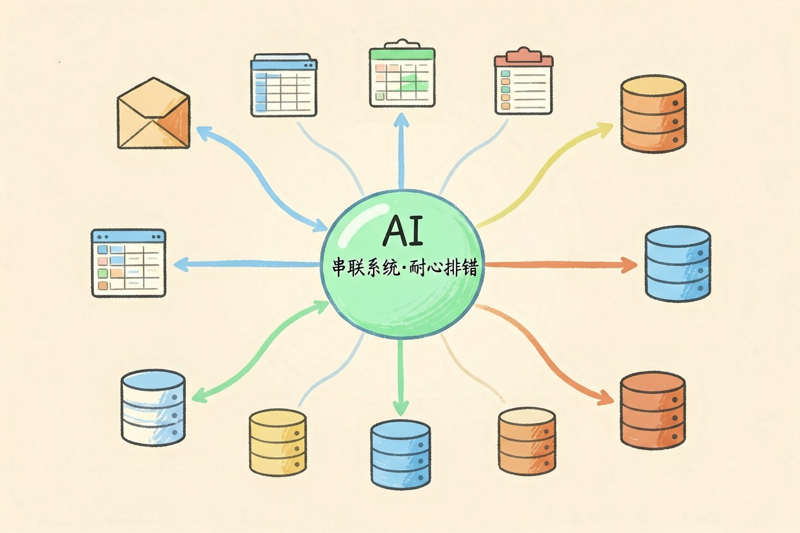

免费能搭智能体的平台有哪些？五个上手看 — Learntide
挑平台真正该先问的，是做完的助手要放到哪里去用。这一条想明白了，选择范围立刻缩小一半。
免费智能体平台怎么挑：先定三条标准

免费智能体平台不少，真正的差别不在功能列表，而在三件事：上手要不要写代码、免费档够不够练手、做完能不能发到你常去的地方。
第三条最容易被忽略。很多人搭完才发现，想放进工作群或者公众号，还得另走一套流程。
自查三问
1. 我会写代码吗？ 不会 → 优先可视化编排
2. 资料能不能上传别人服务器？ 不能 → 只看可自部署的
3. 成品发到哪？ 群聊/网页/自家系统 → 反查平台支持哪些出口先想清楚成品放在哪，再挑平台，能省掉一次返工。
顺序别倒过来。先挑平台再想出口，十有八九要推倒重来。免费档的意思是够你试，不够你养一摊业务。
上手最快的一档：扣子 Coze 和腾讯元器

这两家的共同点是全程可视化，注册就能建，模板和插件都是现成的。零代码做ai助手这件事，它们做得最顺手。
扣子的插件生态更厚，编排颗粒度也细一些。元器胜在和微信生态贴得近，做面向群聊的小助手省事。
代价是数据存在平台侧，编排逻辑也带着各自的产品习惯，想换一家重做，不算轻松。两家都支持把做好的助手直接发到微信和飞书，这一步省掉了自己接渠道的功夫。
适合谁？想快点看到成品的个人和小团队。拿它验证想法，不亏。
第一次建建议从模板改起，别从空白画布开始，能少走两小时弯路。先做一个能跑通的，比同时开五个半成品有用。
能自己部署的一档：Dify 和 FastGPT
这两个都有在线版，也都能下载装到自己的服务器上。资料不出门这一点，是它们最大的卖点。
Dify 的应用编排和知识库配置更完整，社区更热闹。FastGPT 更聚焦知识库问答，界面直白，学起来快。
在线版的免费档做原型够用，团队真跑起来要么升档要么自部署。自部署省下的是订阅费，搭进去的是运维时间。两个都支持接入自己的模型接口，想换底座不麻烦，这点比很多只绑自家模型的平台自在。
适合谁？手上有内部资料、又有人能管服务器的团队。
如果暂时没服务器，先用在线版把流程跑通，确定要长期用再自部署，别一上来就折腾环境，那一步最费时间也最容易劝退。
偏流程自动化的一档：n8n

它本来是做系统之间连线的工具，后来把大模型节点补齐，也能搭出像样的智能体。
长处是连接器多，邮箱、表格、数据库、聊天工具都接得上。适合「AI 只是整条流程里一个环节」的场景。
短板是概念偏工程，新手第一次打开会有点懵，得先花点时间理解节点和触发器。
适合谁？已经在用一堆系统、想把它们串起来的人。只做对话助手的话，它不是最短那条路。
它的免费档对个人够用，但节点一多排错要靠耐心，文档比界面更值得先翻一遍。想试就照现成模板改，别从零拉节点。
别只盯着免费两个字
免费额度看着都够用，撑不撑得住要看调用量。原型阶段随便试，一旦要给同事天天用，先估一遍每天多少次。
还有两个坑。一是能不能换模型接口，锁死在平台自带的模型上会很被动。二是数据能不能导出，攒了半年的知识库拿不走，等于把家安在别人院子里。
还有一条经验：先只搭一个。别同时开五个账号乱试，哪个真跑通了，再考虑要不要换。真要长期用，先把数据导出这一步试通，确认知识库能带走，再决定押注哪个平台。
免费智能体平台适合练手和验证想法，别把长期业务直接架上去，先跑通再谈搬家。
本文信息核对于 2026-08-08。AI 产品的价格、免费额度与功能变动频繁，实际以各工具官网当前说明为准。